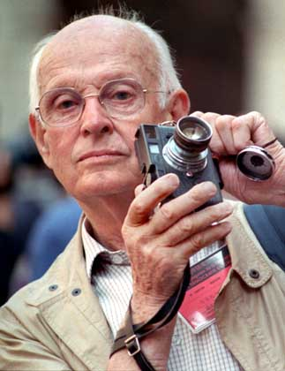

My blog
Favorite post of the month - the history of photographyPhotography. An art form invented in 1830s, becoming publicly recognised ten years later. Today, photography is the largest growing hobby in the world with the hardware alone creating a multi-billion dollar industry. Not everyone knows what Camera Obscura or even Shutter Speed is, nor have many heard of Henri Cartier-Bresson or even Annie Leibovitz. Today we take a step back and take a look at how this fascinating technique was created and developed, because proudly knowing the past is the primary way to create a great future.
Camera Obscura
Before photography was created, people already knew the principles of how it eventually got to work. They could process the image on the wall or piece of paper, however no printing was possible at the time as preserving light turned out to be a lot harder task than projecting it. The instrument that people used for processing pictures was called the Camera Obscura (which is Latin for the Dark Room) and it was around for a few centuries before photography came along. It is believed that Camera Obscura was invented around 13-14th centuries, however there is a manuscript by an Arabian scholar Hassan ibn Hassan dated 10th century that describes the principles on which camera obscura works and on which analogue photography is based today.
Camera Obscura is essentially a dark, closed space in the shape of a box with a hole on one side of it. The hole has to be small enough in proportion to the box to make the camera obscura work properly. The way it works is that due, to optical laws, the light coming through a tiny hole transforms and creates an image on the surface that it meets, i.e. the wall of the box. The image was mirrored and upside down, however, so basically everything that makes today's analogue camera's principles different to camera obscura ones are the mirrors and the film which is used to capture and preserve the image created by the light. Photography, the way it was developing, was always believed to be the killer of the fine art. However, it is believed that the photo principles were widely used by Renaissance artists like Leonardo, Michelangelo and others. In the mid 16th century, Giovanni Battista della Portacentury, an Italian scholar, wrote an essay on how to use camera obscura in aid of making the drawing process easier. He projected the image of people outside the camera obscura on the canvas inside of it (camera obscura was a rather big room in this case) and then drew over the image or tried to copy it. The method is quite similar to that which was used in the Retroscope drawing in the animation industry in early twentieth century. The process of using camera obscura looked very strange and frightening for the people at those times and the Giovanni Battista had to drop the idea after he was arrested and prosecuted on a charge of sorcery. This is a picture of camera obscura in action the way it was used back then.
Even though only few of the Renaissance artists admitted they used camera obscura as an aid in drawing, it is believed most of them did. The reason for not openly admitting it was the fear of being charged of association with occultism or simply not wanting to admit something many artists called cheating. Today we can state that camera obscura was a prototype of the modern photo camera. Even though it seems useless today, many people still find it amusing and use it for artistic reasons or simply for fun. Installing film and permanently capturing an image was a logical progression. If you feel like giving the camera obscura a go, you can see how to build it following this link.
The Invention of the Camera

The first photo picture - as we know it - was taken in 1825 by a French inventor Joseph Niepce. It depicts a view from the window at Le Gras. There is little merit in this picture other than the fact that it is the first photograph taken and preserved. Due to the technical issues the exposure had to last for eight hours, so the sun in the picture had time to move from east to west, appearing to shine on both sides of the building in the picture. There is, of course, no composition as photography at the time could not be seen as art but rather as technical innovation. Like I have stated before, by that time people already knew how to project pictures, they just didn't know how to preserve and "save" light. Niepce came up with the idea of using a petroleum derivative called "Bitumen of Judea". Bitumen hardens with exposure to light so the unhardened material was then washed away. The metal plate, which was the media used by Niepce, was then polished rendering a negative image which then was coated with ink producing a print. One of the numerous problems with this method was that the metal plate was heavy, expensive to produce, and took a lot of time to polish.
In 1839 Sir John Herschel came up with a way of making the first glass negative as opposed to metal. The same year he coined the term Photography deriving from the Greek "fos" meaning light and "grafo" - to write. Even though the process became easier and the result was better, it was still a long time until photography was publicly recognized. At first photography was either used as an aid in the work of an artist or followed the same principles the artists followed. The first publicly recognized portraits were usually portraits of either one person or family portraits to preserve the memories. Finally, after decades of refinements and improvements, the mass use of cameras began with Eastman's Kodak's camera. It went on to the market in 1888 with the slogan "You press the button, we do the rest".
In 1901 the Kodak Brownie was introduced, becoming the first commercial camera in the market available for middle class. The camera took black and white shots only, but still was very popular due to its efficiency and ease of use. Color photography, despite being explored throughout the 19th century, did not become commercially valuable until the middle of the 20th century. The scientists in the beginning of the century could not preserve color for long enough, as they were lost with time passing due to their chemical formulae. Several methods of color photography were patented from 1862 onwards by two French inventors: Louis Ducos de Hauron and Charlec Cros Practical who, however, worked independently. Finally the first practical color plate reached the market in 1907. The method it used was based on a screen of filters. The screen let filtered red, green and/or blue light through and then was developed to a negative being later reversed to a positive. Applying the same screen later on in the process of the print resulted in a color photo that preserved the color. The technology, even though slightly altered, is the one that is still used in the processing. Red, green and blue are the primary colors for television and computer screens, hence the RGB modes in numerous imaging applications.
The first color photo, an image of a tartan ribbon, was taken in 1861 by the famous Scottish physicist James Clerk Maxwell who was famous for his work with electromagnetism. Despite the great influence his photograph had on the photo industry, Maxwell is rarely remembered for this. The reason for that is his inventions in the field of physics simply overshadowed this accomplishment.
The first ever picture to have a human in it was Boulevard du Temple by Louis Daguerre taken in 1839. The exposure lasted for about 10 minutes at the time, so it was barely possible for the camera to capture a man on the busy street, however it did capture a man who had his shoes polished for long enough to appear in the photo.
Names in Photography
When photography came along - being as controversial and full of doubt as it was - only a few people felt like giving it a chance. It was for those few enthusiasts that photography evolved into something as big of an industry as it is at our time. Those few people revolutionized the way the photos were taken, seen, judged and perceived. Here are the most influential of those.
Alfred Stieglitz
Even though the invention of the photography led to new scientific achievements and development of the industrial world, photography also became a part of day-to-day life and an art movement. One of the people behind photography as art was Alfred Stieglitz, an American photographer and a promoter for modern art. Many believe it is Stieglitz who made photography as art what it is today. Stieglitz outside photography is widely known for his passion for avant-garde. Alfred owned several New York art galleries and introduced many of the European avant-garde artists to the U.S. public. His work with the photography was revolutionary for how he portrayed still life and what he brought into photo portraits.

But most importantly was that Stieglizt pointed out that photographers are artists themselves. He, along with F. Holland Day, led the Photo-Secession, the first photography art movement whose primary task was to show that photography was not only about the subject of the picture but also the manipulation by the photographer that led to the subject being portrayed. Stieglitz set up various exhibitions where photos were judged by photographers. Interestingly enough, back then the photos were mainly judged by painters as photographers were seen as rather scientists. Stieglitz also promoted photography through newly established journals such "Camera Notes" and "Camera Work".
Felix Nadar
Felix Nadar (a pseudonym of Gaspard-Félix Tournachon) was a French caricaturist, journalist and - once photography emerged - became a photographer. He is most famous for pioneering the use of artificial lightning in photography. Nadar was a good friend of Jules Verne and is said to have been quite an inspiration for the author: he is believed to be the prototype for the Michael Ardan character in the "From the Earth to the Moon". Nadar was credited for having published the first ever photo interview in 1886. Despite some of the revolutionary ideas, Nadar's portraits followed the same principles of a fine art portrait. He was known for depicting many famous people including Jule Verne, Alexander Dumas, Peter Kropotkin and George Sand. As you can see at the picture below, those portraits were simply recreations of the usual portraits, with classical composition and style.
Henri Cartier-Bresson
Henri Cartier-Bresson was a French photographer who is believed to be the father of photojournalism. Cartier-Bresson is most famous for creating the "street photography" style of photojournalism. Around the age of 23, the young man became very interested in photography and abandoned painting for it. "I suddenly understood that a photograph could fix eternity in an instant." he would later explain. Strangely enough, he would take his first pictures all around the world but avoiding his native France. His first exhibition took place in New York's Julien Levy Gallery in 1932. Cartier-Bresson's first journalistic photos were taken at the George VI coronation in London however none of those portrayed the King himself The Frenchman's works have influenced generations of photo artists and journalists around the world. Despite being narrative, his works are also truly artistic. Having passed away in 2004, Henri Cartier-Bresson has left a legacy and the philosophy behind. His use of 35mm camera made this format the standard, and his quotations are included in many theoretical photography books. Despite all the fame and impact, there are very few pictures of the man. He hated being photographed, as he was embarrassed of his fame.